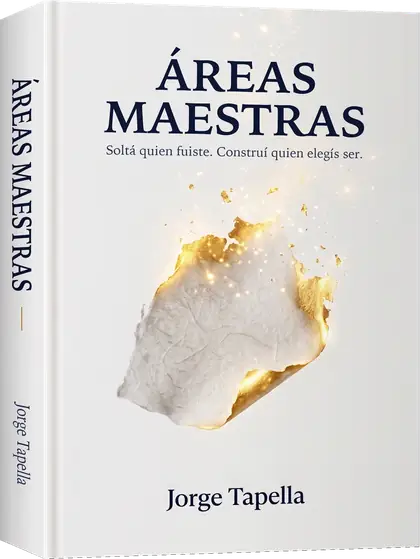
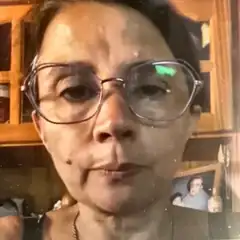
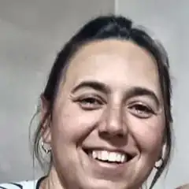
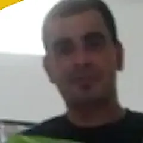

Mi obsesión es ayudar a las personas y cambiarles la vida.
Jorge Tapella
Tenés un expertise y no sabés cómo monetizarlo, te da inseguridad empezar, o lanzarte a crear un nuevo negocio / negocio digital.
Repetís los mismos patrones —trabajo, negocio, vínculos, ingresos económicos— y obtenés siempre los mismos resultados en todas las áreas de tu vida.
Tu profesión, tu negocio o tus proyectos no avanzan como esperabas, y algo te dice que tiene que ver con vos.
No tenés por qué condenarte a vivir como lo estás haciendo.Podés con tu expertise crear tu negocio.Podés trascender las cadenas que atan tus áreas maestras y expandir tus resultados, dinero, vínculos.Podés potenciar tu negocio a otro nivel.
“Después de la mentoría logré renunciar a mi trabajo. Y aprendí que cuento con los recursos para construir mi nuevo camino.”
(Trascendió sus miedos, pudo abandonar su trabajo en relación de dependencia y dedicarse a su propósito. Hoy es escritora y terapeuta en actividad.)
“Un proceso intenso y profundo, y digo que fue bárbaro. Superé bloqueos y puse en marcha mi estudio.”
(Trascendió bloqueos y puso en marcha su negocio y sus proyectos personales.)
“La mentoría me devolvió mucha confianza. Pude reconectarme con mi propósito. Muy recomendable.”
(Trascendió miedos y llevó su propósito a la acción, con charlas y conferencias.)
“Me ayudó mucho, no sólo en el negocio sino en la forma de ver las cosas. En varios aspectos de mi vida me ayudó a cambiar.”
(Trascendió sus miedos y construyó su centro cultural, que hoy está en funcionamiento.)
“Me llevo claridad. Llegué desmantelada, me voy con entusiasmo. Saneé mi economía y redireccioné mi emprendimiento.”
(Trascendió muchos conflictos de orden familiar, trascendió miedos y potenció sus aspectos tanto personales como profesionales y económicos.)
“Estaba muy bloqueada con el dinero. Me ayudó a entender y a amigarme con él. No puedo creer lo aprendido. Abre la mente.”
(Trascendió creencias y miedos sobre el dinero y sobre su profesión.)
“Mucho aprendizaje. Una de las mentorías en las que más información y transformación obtuve. Me gustaría seguir creciendo.”
(Pudo soltar una relación de pareja que no lo representaba y trascendió aspectos relacionados con la economía y el dinero.)
“Agradecido. Dando mis primeros pasos de emprendedor. Y soltando mi perfeccionismo. Gracias por todo.”
(Trascendió sus miedos e inició su proyecto de emprendimiento gastronómico.)
1 / 8
Dominar tus emociones.
Educar a tu inconsciente.
Trascender creencias y patrones.
Potenciar tus capacidades, valores y tu confianza.
Erradicar el miedo y la inseguridad.
Entre otras cosas…
En definitiva, abandonar esa forma de ser y actuar que te encasilla.
¿Preferís sumarte a la mentoría?
…o seguir donde y cómo estás
En un trabajo donde te sentís manipulado
En una relación / relación de pareja que te drena
Recibiendo ingresos que no están a la altura de tus capacidades
Viviendo una vida mediocre que no te merecés
…es tu decisión
“Sos quien me hizo ver el mundo más allá de lo material. Hiciste que cambiara mi mirada. Me voy muy conforme.”
(Trascendió cuestiones de su pasado y de su familia paterna, para empezar a entender su camino.)

“Me sirvió mucho para salir adelante, para priorizarme. Vivía para los demás. Aliento a que se sumen, para romper miedos.”
(Pudo trascender a su expareja.)
“Me llevo mucho aprendizaje. Muchas cosas pude resolver. Logré mucha disciplina: mirarme a mí, mirar para adentro.”
(Pudo soltar una relación de pareja que no la representaba.)
“Mi maestro y mentor preferido. Muy inteligente, me encanta, me emociona. Tus palabras son muy sabias. Lo recomiendo.”
(Trascendió miedos relacionados con su actividad.)
“Mentoría muy constructiva. Me llevo mucho crecimiento y grandes aprendizajes.”
(Pudo soltar una relación de pareja que no lo representaba.)
“Gran aprendizaje. Pude romper cosas y desafiar nuestro subconsciente. Quedé agradecida. Muy recomendable, por supuesto.”
(Trascendió a su expareja.)
“Mucho aprendizaje he tenido. Hoy soy consciente. Ahora quiero seguir trabajándome. Me interesa mucho.”
(Trascendió su historia familiar y logró avances a nivel de confianza y crecimiento.)
“Muy revelador, reflexivo. El mentor ha sido un buen líder. Lo recomiendo sin duda, y que lo hagan a tiempo. Muy agradecida.”
(Trascendió creencias y miedos puntuales.)
1 / 8
Mentorías grupales en vivo todos los miércoles a las 19 hs, con acceso por 3 meses renovable
Cómo funciona tu vida, quién realmente la maneja, cómo te hablás y a quién le estás entregando tu poder.
Qué es un patrón inconsciente, las lealtades invisibles y los cinco pasos para trascenderlo.
Quién sos ahora, cómo cambia tu entorno, hacia dónde vas y cómo sostenerlo.
“Muy interesante. Buscaba romper estos bloqueos. Lo recomiendo.”
(Trascendió creencias y miedos puntuales.)
“Estoy contento. Me pareció muy bueno. Encontré solución. Recomiendo que lo hagan, porque trae soluciones.”
(Trascendió sus miedos puntuales.)
“Me sirvió mucho. Quedé realmente sorprendida. Lo recomiendo verdaderamente para quien quiera crecer.”
(Trascendió creencias y miedos puntuales.)

“Me gustó mucho. Uno, con lo cotidiano, pierde la consciencia. Lo recomiendo para el bienestar de cada uno.”
(Trascendió creencias y miedos puntuales.)
“Me gustó mucho. Se guía y acompaña a cada persona. Absolutamente recomendable.”
(Trascendió creencias y miedos puntuales.)
“Quedé muy sorprendida y agradecida. La recomiendo un 100 por 100.”
(Trascendió creencias y miedos puntuales.)
“Aprendí mucho. Me gustó mucho. Muy recomendable.”
(Trascendió muchos de sus miedos a emprender.)
1 / 7
Testimonios reales de personas que hicieron las mentorías conmigo.
Pago 100% seguro
Trascendieron sus límites, mejoraron sus hábitos y lograron resultados que no esperaban.
“Jamás logré un resultado semejante. Excelente profesional.”
(Mejoró su calidad de vida, potenció su confianza y bajó 41 kg.)
“Excelente profesional, excelente persona. Me ayudó a enfocarme en los objetivos, y logró que disfrute del proceso.”
(Mejoró sus hábitos, elevó su nivel de conciencia, su autoconfianza creció y bajó 31 kg.)

“Logré un cambio increíble.”
(Alineó sus hábitos de una manera fantástica, su confianza creció enormemente, bajó 28 kg y sostiene ese peso hasta hoy.)
“No volví a encontrar la misma dedicación. Logré muy buenos resultados.”
(Mejoró su calidad de vida y su autoestima, bajó 20 kg y nunca más volvió a subir de peso.)
“Excelente profesional y gran persona.”
(Ganó confianza, transformó sus hábitos, bajó 20 kg y mantiene su peso hasta hoy.)
“Siempre hablo de mi época dorada, haciendo referencia a cuando contaba con su acompañamiento.”
(Su autoconfianza creció, mejoró su calidad de vida y bajó 19 kg.)
“Fue el único en lograr eso en mí.”
(Se dio cuenta de lo que lo frenaba, cambió sus hábitos y pudo bajar 13 kg.)
“Nunca me canso de repetir lo excelente profesional que eres.”
(Elevó su nivel de conciencia, potenció su confianza y bajó 12 kg.)
“Me transmitió la importancia de los hábitos para el bienestar. Y muy profesional.”
(Mejoró su bienestar, fortaleció su autoestima, bajó 11 kg y no los recuperó nunca más.)
“Me acompañó durante 10 años y logré mis objetivos. Fue la mejor experiencia estar a su lado.”
(Su confianza se afianzó, sostuvo sus hábitos y bajó 11 kg.)
“Agradecimiento. Su forma de trabajar y su onda hizo que se extrañe. Un excelente profesional y persona.”
(Mejoró su calidad de vida, ganó confianza, se dio cuenta de lo que la limitaba y bajó más de 10 kg.)
“Excelente tu acompañamiento.”
(Tomó conciencia de sus hábitos, ganó autoconfianza y pudo bajar 10 kg.)
“Recuperé un estado de forma que no tenía desde hace años.”
(Recuperó su confianza, mejoró su calidad de vida, bajó 10 kg y se mantiene en su peso hasta el día de hoy.)
1 / 13